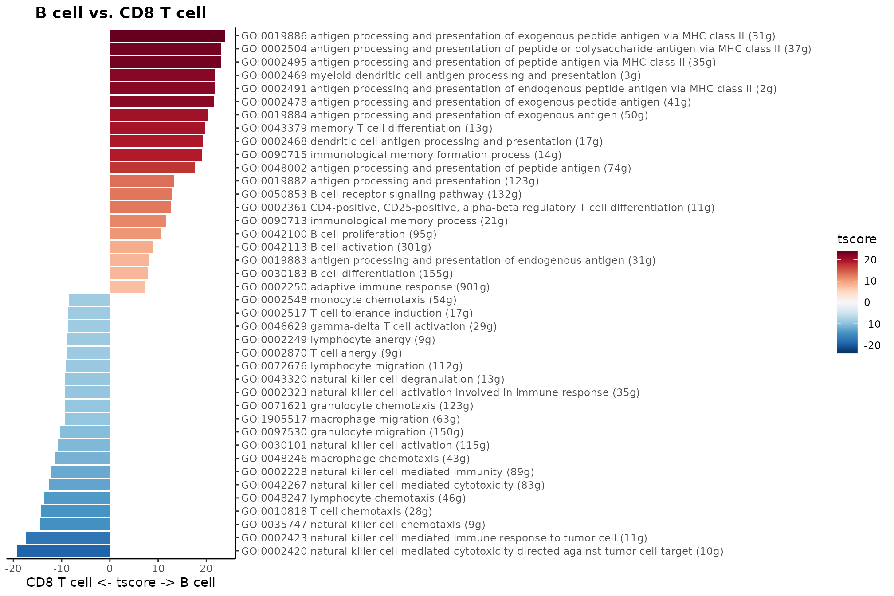
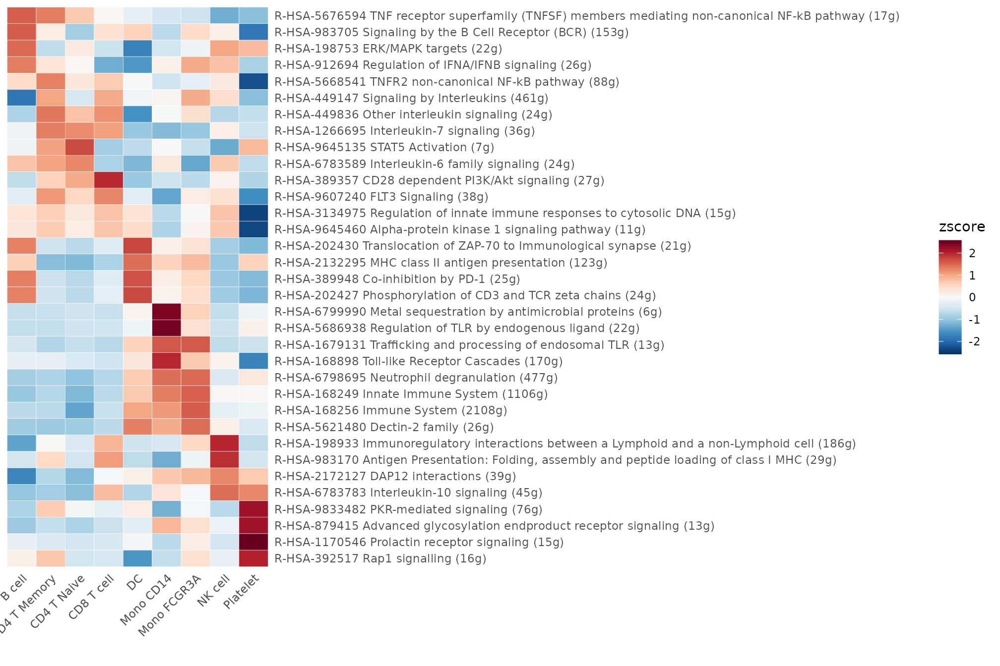
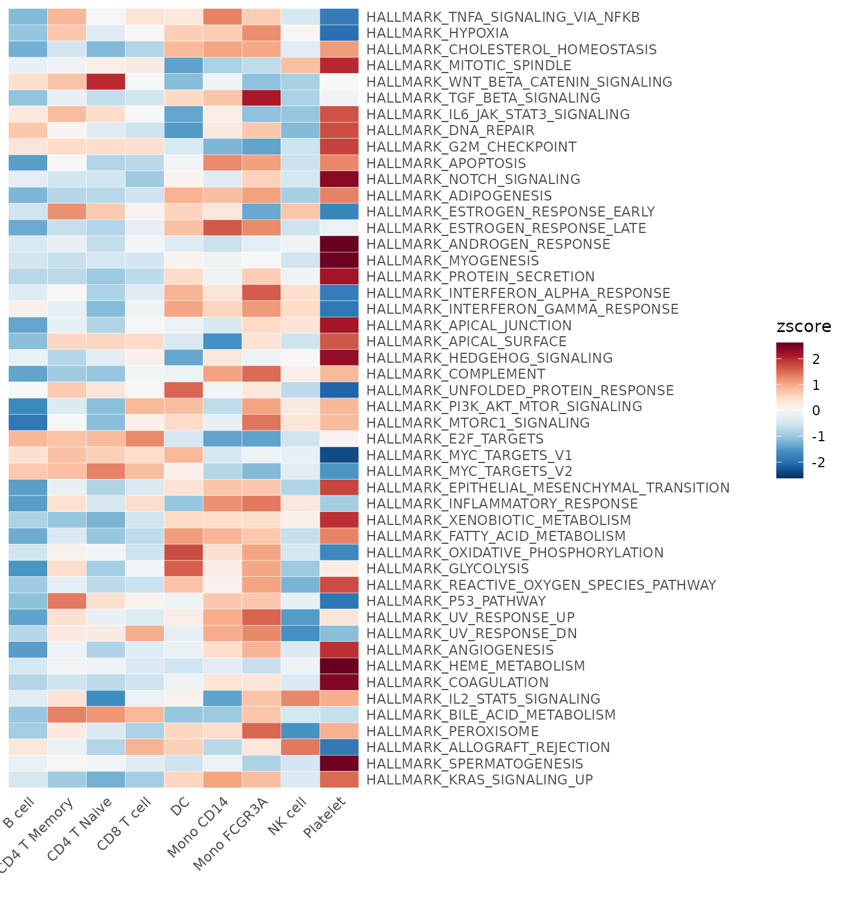

Geneset Enrichment Analysis (GSEA)
Yichao Hua
2025-06-15
GSEA.RmdTable of Contents
- Conduct GSEA using the GO or Reactome database
- Perform GSEA using customized genesets
- Find pathways in the GO/Reactome database or customized genesets
- Convert GO/Reactome pathway IDs to pathway names
- Filter the GO/Reactome pathway list based on certain criteria
- Create a GSEA plot emulating the Broad Institute analysis
Conduct GSEA using the GO or Reactome database
The SeuratExtend package integrates both the GO and
Reactome databases, streamlining the GSEA analysis process. This is
primarily facilitated through the GeneSetAnalysisGO and
GeneSetAnalysisReactome functions, among other
supplementary functions. In this section, we’ll delve into the usage and
features of these functions.
Note on database updates: The GO and Reactome databases are regularly updated by their respective consortia. SeuratExtend provides mechanisms for users to update these databases or create custom ones (including for other model organisms). For detailed instructions, please refer to the FAQ: Updating or Creating Custom GO/Reactome Databases.
Gene Ontology (GO) Database
Performing GSEA using the GO database can be resource-intensive due
to its extensive size. To make the analysis more feasible, you might
consider evaluating pathways under specific categories. For instance, in
the example below, only the pathways under the “immune_system_process”
category are evaluated. The results from this analysis are saved in the
location: seu@misc$AUCell$GO[[title]].
library(SeuratExtend)
library(dplyr)
options(max.print = 12, spe = "human")
pbmc <- GeneSetAnalysisGO(pbmc, parent = "immune_system_process", nCores = 4) # calculating with 4 cores
matr <- pbmc@misc$AUCell$GO$immune_system_process
matr <- RenameGO(matr)
head(matr, 2:3)## cells
## gene sets CTATAAGATCGTTT-1 GTGATTCTGGTTCA-1
## GO:0002376 immune system process (3276g) 0.21436237 0.22757728
## GO:0001776 leukocyte homeostasis (122g) 0.03333274 0.02684303
## cells
## gene sets ACGTTGGACCGTAA-1
## GO:0002376 immune system process (3276g) 0.23447311
## GO:0001776 leukocyte homeostasis (122g) 0.03761207For the “parent” argument, you can input any term from the GO
database, be it a GO ID or a pathway name. To get a glimpse of commonly
used GO categories, you can run GeneSetAnalysisGO() without
any arguments:
## immune_system_process response_to_stimulus
## "GO:0002376" "GO:0050896"
## signaling metabolic_process
## "GO:0023052" "GO:0008152"
## regulation_of_vasculature_development signal_transduction
## "GO:1901342" "GO:0007165"Here are some suggested visualization methods:
- Heatmap: Useful for comparing multiple groups with numerous features but provides a less detailed representation.
- Violin Plot: Best suited for comparing multiple groups with fewer features while presenting more details for individual data points.
VlnPlot2(matr[1:3,], f = pbmc$cluster, ncol = 1)- Waterfall Plot: Ideal for comparing two groups.
WaterfallPlot(matr, f = pbmc$cluster, ident.1 = "B cell", ident.2 = "CD8 T cell", top.n = 20)
Reactome Database
For GSEA using the Reactome database, consider assessing pathways
under certain categories to make the process more manageable. The
example below evaluates pathways under the “Immune System” category.
Results from this analysis are saved under:
seu@misc$AUCell$Reactome[[title]].
pbmc <- GeneSetAnalysisReactome(pbmc, parent = "Immune System")
matr <- pbmc@misc$AUCell$Reactome$`Immune System`
matr <- RenameReactome(matr)
Heatmap(CalcStats(matr, f = pbmc$cluster, order = "p", n = 4), lab_fill = "zscore")
Similar to the GO database, running
GeneSetAnalysisReactome() without any arguments lets you
view commonly used categories in the Reactome database:
## R-HSA-109582 R-HSA-112316
## "Hemostasis" "Neuronal System"
## R-HSA-1266738 R-HSA-1430728
## "Developmental Biology" "Metabolism"
## R-HSA-1474165 R-HSA-1474244
## "Reproduction" "Extracellular matrix organization"
## R-HSA-1500931 R-HSA-162582
## "Cell-Cell communication" "Signal Transduction"
## R-HSA-1640170 R-HSA-1643685
## "Cell Cycle" "Disease"
## R-HSA-168256 R-HSA-1852241
## "Immune System" "Organelle biogenesis and maintenance"
## [ reached getOption("max.print") -- omitted 17 entries ]Managing and Customizing GO/Reactome Databases (New in v1.2.0)
SeuratExtend now offers improved ways to manage and update the GO and Reactome databases used in your analyses.
Installing Specific SeuratExtendData Versions
You can install specific versions of the SeuratExtendData package to access different database releases:
# Install the latest version (April 2025 data)
install_SeuratExtendData("latest")
# Install the stable version (January 2020 data)
install_SeuratExtendData("stable")
# Install specific dataset versions
install_SeuratExtendData("v0.2.1") # January 2020 datasets
install_SeuratExtendData("v0.3.0") # April 2025 datasetsThis ensures compatibility with specific analysis workflows or when you need to match results from previous studies.
Creating Custom Databases
For creating custom databases with the latest data or for additional species, SeuratExtend provides comprehensive documentation:
# For complete instructions, refer to:
browseURL("https://github.com/huayc09/SeuratExtendData/blob/main/inst/db_creation/README_GO_Data.md")
browseURL("https://github.com/huayc09/SeuratExtendData/blob/main/inst/db_creation/README_Reactome_Data.md")The custom databases can be easily used by assigning them to the global environment:
# Load custom database
custom_GO_Data <- readRDS("path/to/your/GO_Data.rds")
# Use with SeuratExtend by assigning to global environment
GO_Data <- custom_GO_Data
# Run analysis
seu <- GeneSetAnalysisGO(seu, parent = "immune_system_process")
# When done, remove the global variable
rm(GO_Data)For detailed examples and troubleshooting, please refer to the FAQ: Updating or Creating Custom GO/Reactome Databases.
Perform GSEA using customized genesets
To conduct a Gene Set Enrichment Analysis (GSEA) with custom gene
sets, the GeneSetAnalysis function is the tool of choice.
For instance, one might consider utilizing the Hallmark
50 gene set, commonly employed for general screening. This set can
be accessed via the hall50 object. Upon execution, the
resulting AUCell matrix will be stored under the path:
seu@misc$AUCell[[title]].
pbmc <- GeneSetAnalysis(pbmc, genesets = hall50$human)
matr <- pbmc@misc$AUCell$genesets
Heatmap(CalcStats(matr, f = pbmc$cluster), lab_fill = "zscore")
For those seeking a plethora of other gene sets, the
SeuratExtendData::Genesets_data offers an expansive
collection sourced from the GSEA
MSigDB website. Here’s how you can view the available
collections:
names(SeuratExtendData::Genesets_data$human$GSEA)## [1] "positional gene sets"
## [2] "all curated gene sets"
## [3] "chemical and genetic perturbations"
## [4] "BioCarta gene sets"
## [5] "KEGG gene sets"
## [6] "PID gene sets"
## [7] "all canonical pathways"
## [8] "all motif gene sets"
## [9] "transcription factor targets"
## [10] "all computational gene sets"
## [11] "all immunologic signatures gene sets"
## [12] "hallmark gene sets"Furthermore, for cluster annotations, the
SeuratExtend::PanglaoDB_data contains a valuable resource:
marker lists for 178 distinct cell types, curated from PanglaoDB. To explore these
marker lists:
names(SeuratExtend::PanglaoDB_data$marker_list_human)## [1] "Acinar cells" "Adipocyte progenitor cells"
## [3] "Adipocytes" "Adrenergic neurons"
## [5] "Airway epithelial cells" "Airway goblet cells"
## [7] "Airway smooth muscle cells" "Alpha cells"
## [9] "Alveolar macrophages" "Anterior pituitary gland cells"
## [11] "Astrocytes" "B cells"
## [ reached getOption("max.print") -- omitted 166 entries ]Find pathways in the GO/Reactome database or customized genesets
Navigating the plethora of pathways in databases like GO and Reactome
can be overwhelming. The SearchDatabase function simplifies
this process by offering a wide array of customizable search
parameters.
General Search
The ‘item’ parameter is highly versatile, allowing you to search by gene name, pathway ID, or even keywords within pathway names. The following example demonstrates how to find pathways containing the gene “CD3D” or pathways with names including “metabolic.”
result <- SearchDatabase(c("CD3D", "metabolic"))
names(result)## [1] "GO:0000023 maltose metabolic process (2g)"
## [2] "GO:0000038 very long-chain fatty acid metabolic process (35g)"
## [3] "GO:0000052 citrulline metabolic process (8g)"
## [4] "GO:0000053 argininosuccinate metabolic process (1g)"
## [5] "GO:0000096 sulfur amino acid metabolic process (31g)"
## [6] "GO:0000255 allantoin metabolic process (10g)"
## [7] "GO:0000270 peptidoglycan metabolic process (6g)"
## [8] "GO:0000820 regulation of glutamine family amino acid metabolic process (7g)"
## [9] "GO:0000821 regulation of arginine metabolic process (5g)"
## [10] "GO:0000959 mitochondrial RNA metabolic process (64g)"
## [11] "GO:0001523 retinoid metabolic process (87g)"
## [12] "GO:0001573 ganglioside metabolic process (29g)"
## [ reached getOption("max.print") -- omitted 943 entries ]## List of 3
## $ GO:0000023 maltose metabolic process (2g) :List of 3
## ..$ SetID : chr "GO:0000023"
## ..$ SetName: chr "maltose metabolic process"
## ..$ Genes : chr [1:2] "MGAM" "GAA"
## $ GO:0000038 very long-chain fatty acid metabolic process (35g):List of 3
## ..$ SetID : chr "GO:0000038"
## ..$ SetName: chr "very long-chain fatty acid metabolic process"
## ..$ Genes : chr [1:35] "ELOVL7" "HACD1" "ABCD4" "SLC27A2" ...
## $ GO:0000052 citrulline metabolic process (8g) :List of 3
## ..$ SetID : chr "GO:0000052"
## ..$ SetName: chr "citrulline metabolic process"
## ..$ Genes : chr [1:8] "DDAH1" "DDAH2" "OTC" "ASS1" ...Type-Specific Search
If you wish to limit your search to specific types of items such as gene names, you can utilize the ‘type’ parameter as shown below.
result <- SearchDatabase("CD3D", type = "gene")
names(result)## [1] "GO:0001775 cell activation (1239g)"
## [2] "GO:0002250 adaptive immune response (901g)"
## [3] "GO:0002253 activation of immune response (730g)"
## [4] "GO:0002376 immune system process (3276g)"
## [5] "GO:0002429 immune response-activating cell surface receptor signaling pathway (419g)"
## [6] "GO:0002521 leukocyte differentiation (685g)"
## [7] "GO:0002682 regulation of immune system process (1852g)"
## [8] "GO:0002684 positive regulation of immune system process (1301g)"
## [9] "GO:0002757 immune response-activating signaling pathway (647g)"
## [10] "GO:0002764 immune response-regulating signaling pathway (718g)"
## [11] "GO:0002768 immune response-regulating cell surface receptor signaling pathway (452g)"
## [12] "GO:0003674 molecular_function (30703g)"
## [ reached getOption("max.print") -- omitted 94 entries ]Database-Specific Search
To focus your search within a particular database, specify the database name using the ‘database’ parameter.
result <- SearchDatabase("CD3D", database = "Reactome")
names(result)## [1] "R-HSA-1280218 Adaptive Immune System (816g)"
## [2] "R-HSA-168256 Immune System (2108g)"
## [3] "R-HSA-198933 Immunoregulatory interactions between a Lymphoid and a non-Lymphoid cell (186g)"
## [4] "R-HSA-199991 Membrane Trafficking (630g)"
## [5] "R-HSA-202403 TCR signaling (108g)"
## [6] "R-HSA-202424 Downstream TCR signaling (86g)"
## [7] "R-HSA-202427 Phosphorylation of CD3 and TCR zeta chains (24g)"
## [8] "R-HSA-202430 Translocation of ZAP-70 to Immunological synapse (21g)"
## [9] "R-HSA-202433 Generation of second messenger molecules (36g)"
## [10] "R-HSA-388841 Regulation of T cell activation by CD28 family (76g)"
## [11] "R-HSA-389948 Co-inhibition by PD-1 (25g)"
## [12] "R-HSA-5653656 Vesicle-mediated transport (725g)"
## [ reached getOption("max.print") -- omitted 2 entries ]Species-Specific Search
You can specify either ‘human’ or ‘mouse’ using the ‘spe’ parameter.
result <- SearchDatabase("Cd3d", spe = "mouse")
glimpse(head(result, 3))## List of 3
## $ GO:0001775 cell activation (1281g) :List of 3
## ..$ SetID : chr "GO:0001775"
## ..$ SetName: chr "cell activation"
## ..$ Genes : chr [1:1281] "mCEACAM1a/iso:4L/SigPep-/NGlycoAsn+" "mCEACAM1a/iso:4S/SigPep-/NGlycoAsn+" "mSkint2" "Cd86" ...
## $ GO:0002250 adaptive immune response (688g):List of 3
## ..$ SetID : chr "GO:0002250"
## ..$ SetName: chr "adaptive immune response"
## ..$ Genes : chr [1:688] "Cd86" "Cd79a" "Cd80" "Msh2" ...
## $ GO:0002376 immune system process (3229g) :List of 3
## ..$ SetID : chr "GO:0002376"
## ..$ SetName: chr "immune system process"
## ..$ Genes : chr [1:3229] "mCCL27/iso:1/SigPep-" "mCOCH/Nter" "mEPRS/Phos:1" "mCEACAM1a/iso:4L/SigPep-/NGlycoAsn+" ...Customizing Return Types
The function also offers flexibility in output types. For example, if you require a list of pathway IDs for downstream analysis, you can use the ‘return’ parameter as follows.
result <- SearchDatabase("CD3D", return = "ID")
result## [1] "GO:0001775" "GO:0002250" "GO:0002253" "GO:0002376" "GO:0002429"
## [6] "GO:0002521" "GO:0002682" "GO:0002684" "GO:0002757" "GO:0002764"
## [11] "GO:0002768" "GO:0003674"
## [ reached getOption("max.print") -- omitted 94 entries ]Alternatively, if you need the output as a gene list formatted for
GeneSetAnalysis, adjust the ‘return’ parameter like so:
result <- SearchDatabase("CD3D", return = "genelist")
glimpse(head(result, 5))## List of 5
## $ GO:0001775: chr [1:1239] "TRBC2" "DAPL1" "IRGM" "TESPA1" ...
## $ GO:0002250: chr [1:901] "IGKV3-7" "IGKV1D-42" "IGLV4-69" "IGLV8-61" ...
## $ GO:0002253: chr [1:730] "TRBC2" "IGLC7" "IRGM" "TESPA1" ...
## $ GO:0002376: chr [1:3276] "TRBV20OR9-2" "IGKV3-7" "IGKV1D-42" "IGLV4-69" ...
## $ GO:0002429: chr [1:419] "TRBC2" "IGLC7" "TESPA1" "ACOD1" ...To export the result as a data frame, suitable for formats like Excel or CSV, set the ‘export.to.data.frame’ parameter to TRUE.
result <- SearchDatabase("CD3D", export.to.data.frame = TRUE)
glimpse(result)## Rows: 106
## Columns: 3
## $ SetID <chr> "GO:0001775", "GO:0002250", "GO:0002253", "GO:0002376", "GO:00…
## $ SetName <chr> "cell activation", "adaptive immune response", "activation of …
## $ Genes <chr> "TRBC2,DAPL1,IRGM,TESPA1,TMEM131L,PSMB11,CCDC88B,MFSD2B,LILRA5…Filtering a Customized Gene Set
Lastly, you can also filter a given gene set list with the
SearchPathways function. For instance, within the “Hallmark
50” database, you can find pathways that include the gene “CD3D” or have
names that contain “interferon.”
SearchPathways(genesets = hall50$human, item = c("CD3D", "interferon"))## $HALLMARK_INTERFERON_ALPHA_RESPONSE
## [1] "MX1" "ISG15" "AC004551.1" "IFIT3" "IFI44"
## [6] "IFI35" "IRF7" "RSAD2" "IFI44L" "IFITM1"
## [11] "IFI27" "IRF9"
## [ reached getOption("max.print") -- omitted 85 entries ]
##
## $HALLMARK_INTERFERON_GAMMA_RESPONSE
## [1] "STAT1" "ISG15" "IFIT1" "MX1" "IFIT3" "IFI35" "IRF7"
## [8] "IFIT2" "OAS2" "TAP1" "EIF2AK2" "RSAD2"
## [ reached getOption("max.print") -- omitted 188 entries ]
##
## $HALLMARK_ALLOGRAFT_REJECTION
## [1] "PTPRC" "IL12B" "TGFB1" "IL12A" "CD3E" "CD3D" "CD28" "LYN" "HCLS1"
## [10] "IL18" "CRTAM" "IFNG"
## [ reached getOption("max.print") -- omitted 188 entries ]Convert GO/Reactome pathway IDs to pathway names
During the course of analyses, researchers often encounter pathway
IDs from databases such as GO and Reactome. While these IDs are great
for computational tasks, they can be cryptic when it comes to
interpretability. RenameGO and RenameReactome
functions provide a convenient means to transform these IDs into their
more descriptive pathway names.
The primary parameter these functions require is “item”. This can either be:
- A character vector of GO or Reactome IDs. For example, this could be
the output from functions like
FilterGOTermsorFilterReactomeTerms. - A matrix where the IDs are stored in the rownames, such as the
output of
GeneSetAnalysisGOorGeneSetAnalysisReactome.
Convert GO IDs to their respective pathway names for human:
## [1] "GO:0002376 immune system process (3276g)"
## [2] "GO:0050896 response to stimulus (10220g)"Similarly, for Reactome IDs:
RenameReactome(c("R-HSA-109582","R-HSA-112316"), spe = "human")## [1] "R-HSA-109582 Hemostasis (679g)" "R-HSA-112316 Neuronal System (411g)"Filter the GO/Reactome pathway list based on certain criteria
Both GO and Reactome databases contain thousands of pathways, but not
all of which may be relevant to your study. To streamline the analysis,
you can use the FilterGOTerms and
FilterReactomeTerms functions to subset and refine the list
of GO or Reactome pathways based on specific criteria.
Filtering GO Pathways
Let’s start by looking at how you can filter GO pathways:
-
By Parent Term: To select pathways under a specific
category, use the
parentparameter. For example, to get pathways related to the immune system process:
terms <- FilterGOTerms(parent = "GO:0002376")
RenameGO(terms)## [1] "GO:0001773 myeloid dendritic cell activation (32g)"
## [2] "GO:0001774 microglial cell activation (57g)"
## [3] "GO:0001776 leukocyte homeostasis (122g)"
## [4] "GO:0001777 T cell homeostatic proliferation (4g)"
## [5] "GO:0001779 natural killer cell differentiation (27g)"
## [6] "GO:0001780 neutrophil homeostasis (23g)"
## [7] "GO:0001782 B cell homeostasis (37g)"
## [8] "GO:0001787 natural killer cell proliferation (19g)"
## [9] "GO:0001788 antibody-dependent cellular cytotoxicity (10g)"
## [10] "GO:0001794 type IIa hypersensitivity (12g)"
## [11] "GO:0001802 type III hypersensitivity (3g)"
## [12] "GO:0001806 type IV hypersensitivity (5g)"
## [ reached getOption("max.print") -- omitted 420 entries ]-
By Gene Count: If you’re interested in pathways of
a specific size (i.e., containing a certain number of genes), you can
further refine your previously filtered list using the
n.minandn.maxparameters. Building upon the pathways we selected under the “immune system process” (terms), to keep only those pathways that contain between 10 and 1000 genes:
terms2 <- FilterGOTerms(term = terms, n.min = 10, n.max = 1000)
RenameGO(terms2)## [1] "GO:0001773 myeloid dendritic cell activation (32g)"
## [2] "GO:0001774 microglial cell activation (57g)"
## [3] "GO:0001776 leukocyte homeostasis (122g)"
## [4] "GO:0001779 natural killer cell differentiation (27g)"
## [5] "GO:0001780 neutrophil homeostasis (23g)"
## [6] "GO:0001782 B cell homeostasis (37g)"
## [7] "GO:0001787 natural killer cell proliferation (19g)"
## [8] "GO:0001788 antibody-dependent cellular cytotoxicity (10g)"
## [9] "GO:0001794 type IIa hypersensitivity (12g)"
## [10] "GO:0001865 NK T cell differentiation (11g)"
## [11] "GO:0001866 NK T cell proliferation (14g)"
## [12] "GO:0001867 complement activation, lectin pathway (21g)"
## [ reached getOption("max.print") -- omitted 234 entries ]-
End-Level Pathways: If you prefer to look at only
the end-level (most specific) pathways, set the
only.end.termsparameter toTRUE.
terms3 <- FilterGOTerms(term = terms, only.end.terms = TRUE)
RenameGO(terms3)## [1] "GO:0001777 T cell homeostatic proliferation (4g)"
## [2] "GO:0001780 neutrophil homeostasis (23g)"
## [3] "GO:0001787 natural killer cell proliferation (19g)"
## [4] "GO:0001788 antibody-dependent cellular cytotoxicity (10g)"
## [5] "GO:0001802 type III hypersensitivity (3g)"
## [6] "GO:0001806 type IV hypersensitivity (5g)"
## [7] "GO:0001865 NK T cell differentiation (11g)"
## [8] "GO:0001866 NK T cell proliferation (14g)"
## [9] "GO:0001867 complement activation, lectin pathway (21g)"
## [10] "GO:0001905 activation of membrane attack complex (3g)"
## [11] "GO:0001922 B-1 B cell homeostasis (4g)"
## [12] "GO:0002222 stimulatory killer cell immunoglobulin-like receptor signaling pathway (2g)"
## [ reached getOption("max.print") -- omitted 207 entries ]Filtering Reactome Pathways
The process for Reactome pathways is analogous. For instance, to select pathways related to the Immune System:
terms <- FilterReactomeTerms(parent = "R-HSA-168256")
RenameReactome(terms)## [1] "R-HSA-1059683 Interleukin-6 signaling (11g)"
## [2] "R-HSA-1168372 Downstream signaling events of B Cell Receptor (BCR) (68g)"
## [3] "R-HSA-1169091 Activation of NF-kappaB in B cells (54g)"
## [4] "R-HSA-1169092 Activation of RAS in B cells (5g)"
## [5] "R-HSA-1169408 ISG15 antiviral mechanism (74g)"
## [6] "R-HSA-1169410 Antiviral mechanism by IFN-stimulated genes (151g)"
## [7] "R-HSA-1170546 Prolactin receptor signaling (15g)"
## [8] "R-HSA-1222556 ROS and RNS production in phagocytes (36g)"
## [9] "R-HSA-1236973 Cross-presentation of particulate exogenous antigens (phagosomes) (8g)"
## [10] "R-HSA-1236974 ER-Phagosome pathway (82g)"
## [11] "R-HSA-1236975 Antigen processing-Cross presentation (98g)"
## [12] "R-HSA-1236977 Endosomal/Vacuolar pathway (11g)"
## [ reached getOption("max.print") -- omitted 190 entries ]Create a GSEA plot emulating the Broad Institute analysis
The GSEAplot function is designed to generate plots that
emulate the Gene Set Enrichment Analysis (GSEA) as developed by the
Broad Institute. This function provides a way to visualize the
enrichment of specific gene sets within different biological states or
conditions.
Here’s how you can create a GSEA plot for the
“INTERFERON_GAMMA_RESPONSE” gene set within the “Naive CD4 T” cell
population of the pbmc dataset:
GSEAplot(
pbmc,
ident.1 = "CD4 T Naive",
title = "INTERFERON_GAMMA_RESPONSE",
geneset = hall50$human$HALLMARK_INTERFERON_GAMMA_RESPONSE
)
options(max.print = 200)
sessionInfo()## R version 4.4.0 (2024-04-24)
## Platform: x86_64-pc-linux-gnu
## Running under: Ubuntu 20.04.6 LTS
##
## Matrix products: default
## BLAS: /usr/lib/x86_64-linux-gnu/blas/libblas.so.3.9.0
## LAPACK: /usr/lib/x86_64-linux-gnu/lapack/liblapack.so.3.9.0
##
## locale:
## [1] LC_CTYPE=en_US.UTF-8 LC_NUMERIC=C
## [3] LC_TIME=de_BE.UTF-8 LC_COLLATE=en_US.UTF-8
## [5] LC_MONETARY=de_BE.UTF-8 LC_MESSAGES=en_US.UTF-8
## [7] LC_PAPER=de_BE.UTF-8 LC_NAME=C
## [9] LC_ADDRESS=C LC_TELEPHONE=C
## [11] LC_MEASUREMENT=de_BE.UTF-8 LC_IDENTIFICATION=C
##
## time zone: Europe/Brussels
## tzcode source: system (glibc)
##
## attached base packages:
## [1] parallel stats4 stats graphics grDevices utils datasets
## [8] methods base
##
## other attached packages:
## [1] ggpubr_0.6.0 tidyr_1.3.1
## [3] rlist_0.4.6.2 RColorBrewer_1.1-3
## [5] viridis_0.6.5 viridisLite_0.4.2
## [7] mosaic_1.9.1 mosaicData_0.20.4
## [9] ggformula_0.12.0 lattice_0.22-6
## [11] rlang_1.1.4 scales_1.3.0
## [13] reshape2_1.4.4 ggplot2_3.5.1
## [15] doMC_1.3.8 iterators_1.0.14
## [17] foreach_1.5.2 DelayedMatrixStats_1.26.0
## [19] DelayedArray_0.30.1 SparseArray_1.4.8
## [21] S4Arrays_1.4.1 abind_1.4-5
## [23] IRanges_2.38.1 S4Vectors_0.42.1
## [25] MatrixGenerics_1.16.0 matrixStats_1.3.0
## [27] BiocGenerics_0.50.0 Matrix_1.7-0
## [29] dplyr_1.1.4 SeuratExtend_1.2.3
## [31] SeuratObject_5.0.2 sp_2.1-4
## [33] SeuratExtendData_0.3.0
##
## loaded via a namespace (and not attached):
## [1] RcppAnnoy_0.0.22 splines_4.4.0 later_1.3.2
## [4] tibble_3.2.1 polyclip_1.10-6 fastDummies_1.7.3
## [7] lifecycle_1.0.4 rstatix_0.7.2 globals_0.16.3
## [10] MASS_7.3-61 backports_1.5.0 magrittr_2.0.3
## [13] plotly_4.10.4 sass_0.4.9 rmarkdown_2.29
## [16] jquerylib_0.1.4 yaml_2.3.9 httpuv_1.6.15
## [19] Seurat_5.2.1 sctransform_0.4.1 spam_2.10-0
## [22] spatstat.sparse_3.1-0 reticulate_1.38.0 cowplot_1.1.3
## [25] pbapply_1.7-2 zlibbioc_1.50.0 Rtsne_0.17
## [28] purrr_1.0.2 labelled_2.13.0 ggrepel_0.9.5
## [31] irlba_2.3.5.1 listenv_0.9.1 spatstat.utils_3.0-5
## [34] goftest_1.2-3 RSpectra_0.16-1 spatstat.random_3.2-3
## [37] fitdistrplus_1.2-1 parallelly_1.37.1 pkgdown_2.0.7
## [40] codetools_0.2-20 tidyselect_1.2.1 farver_2.1.2
## [43] spatstat.explore_3.2-7 jsonlite_1.8.8 progressr_0.14.0
## [46] ggridges_0.5.6 survival_3.7-0 systemfonts_1.1.0
## [49] tools_4.4.0 ragg_1.3.2 ica_1.0-3
## [52] Rcpp_1.0.13 glue_1.7.0 gridExtra_2.3
## [55] xfun_0.45 withr_3.0.0 fastmap_1.2.0
## [58] fansi_1.0.6 digest_0.6.36 R6_2.5.1
## [61] mime_0.12 textshaping_0.4.0 colorspace_2.1-0
## [64] scattermore_1.2 tensor_1.5 spatstat.data_3.1-2
## [67] utf8_1.2.4 generics_0.1.3 data.table_1.15.4
## [70] httr_1.4.7 htmlwidgets_1.6.4 uwot_0.2.2
## [73] pkgconfig_2.0.3 gtable_0.3.5 lmtest_0.9-40
## [76] XVector_0.44.0 htmltools_0.5.8.1 carData_3.0-5
## [79] dotCall64_1.1-1 png_0.1-8 knitr_1.48
## [82] rstudioapi_0.16.0 nlme_3.1-165 cachem_1.1.0
## [85] zoo_1.8-12 stringr_1.5.1 KernSmooth_2.23-24
## [88] miniUI_0.1.1.1 desc_1.4.3 pillar_1.9.0
## [91] grid_4.4.0 vctrs_0.6.5 RANN_2.6.1
## [94] promises_1.3.0 car_3.1-2 xtable_1.8-4
## [97] cluster_2.1.6 evaluate_0.24.0 cli_3.6.3
## [100] compiler_4.4.0 crayon_1.5.3 future.apply_1.11.2
## [103] ggsignif_0.6.4 labeling_0.4.3 plyr_1.8.9
## [106] forcats_1.0.0 fs_1.6.4 stringi_1.8.4
## [109] deldir_2.0-4 munsell_0.5.1 lazyeval_0.2.2
## [112] spatstat.geom_3.2-9 mosaicCore_0.9.4.0 RcppHNSW_0.6.0
## [115] hms_1.1.3 patchwork_1.2.0 sparseMatrixStats_1.16.0
## [118] future_1.33.2 shiny_1.8.1.1 highr_0.11
## [121] haven_2.5.4 ROCR_1.0-11 igraph_2.0.3
## [124] broom_1.0.6 memoise_2.0.1 bslib_0.4.2